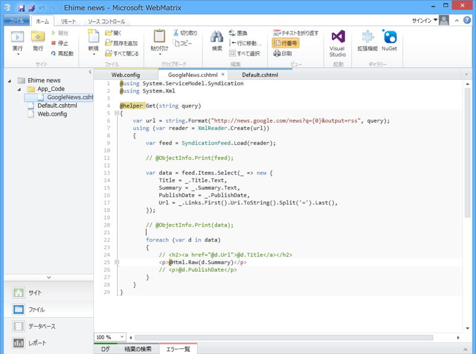
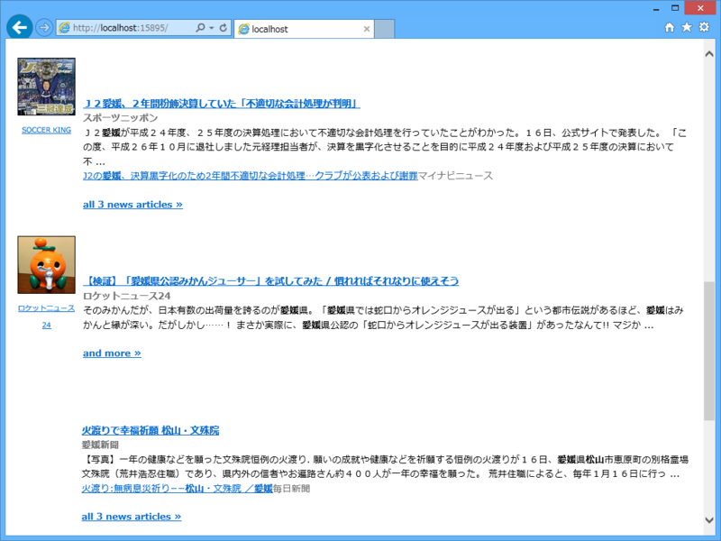

WebMatrix：愛媛のニュースだけ読みたいので、Google ニュースから引っ張ってくる
公開日：

地元のニュースだけ読みたいので、それを Google ニュース引っ張ってくる BOT でも作ろうかと思って少し調べてみた。
# ~/App_Code/GoogleNews.cshtml@using System.ServiceModel.Syndication @using System.Xml
@helper Get(string query) { var url = string.Format( "http://news.google.com/news?q={0}&output=rss", query );
using (var reader = XmlReader.Create(url)) { var feed = SyndicationFeed.Load(reader);
// @ObjectInfo.Print(feed);
var data = feed.Items.Select(_ => new { Title = _.Title.Text, Summary = _.Summary.Text, PublishDate = _.PublishDate, Url = _.Links.First().Uri.ToString().Split('=').Last(), });
// @ObjectInfo.Print(data);
foreach (var d in data) { // <h2><a href="@d.Url">@d.Title</a></h2> <p>@Html.Raw(d.Summary)</p> // <p>@d.PublishDate</p> } } }
パラメーターに output=rss をくっつけると RSS 形式でデータを取得できるので XmlReader と SyndicationFeed で読み込み・整形してやるとよさげ。
残念なのでは地域ごとに絞れないこと*1。そのため「松山」で検索すると台湾の松山のニュースも引っかかるが……まぁ、これは仕方ないかな。JavaScript の API を利用すれば、ちゃんと制御できるようなので、JavaScript ができる人はそちらで書けばいいと思う。
結果

# ~/Default.cshtml<!DOCTYPE html>
<html lang="en"> <head> <meta charset="utf-8" /> <title></title> <style>
- {
font-family: Meiryo, sans-serif;
}
</style>
</head>
<body>
@GoogleNews.Get("愛媛 OR 松山 -秀樹 -ゴルフ")
</body>
</html>
天気予報機能も付けて（「☀時々☁、最高10度最低0度、西風後南西風海上後南西風稍強、波0.5米後1米」）、Twitter BOT にでもしようかな。
*1:本当はパラメーターに ned=jp を付けるとその国のニュースのみにデータを絞れるはずなのだけど、日本語版の Google ニュースでは利用できないようだ。